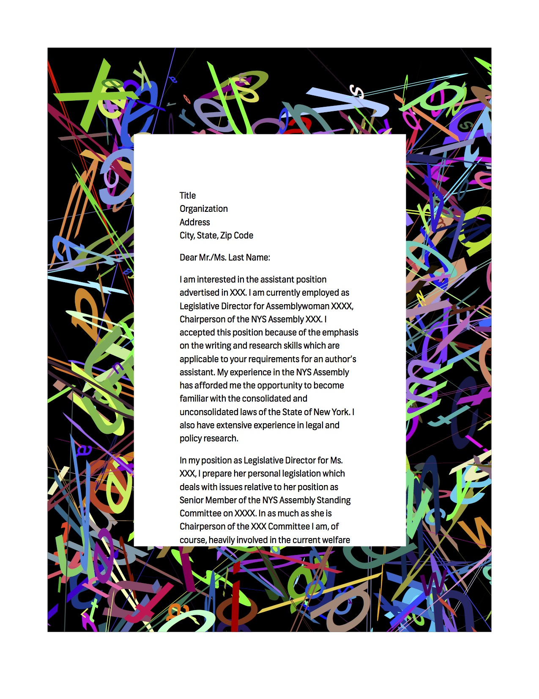

---

layout: page
title: Random Letter Letterhead
author: Ojus Doshi

description: Programmatically generate a unique, personal letterhead
category: project

printready: true

---

<p>Web designers have taken advantage of powerful scripting languages to design for modern web browsers for quite some time. The ability to generate random numbers through these scripting languages can be further used to create unique web-to-print situations. In this instance, I modified a randomization script created by <a href="http://ltwp.net">Lukas</a> to randomly color and skew existing letterforms and place these newly modified letters in a border. If this script was used for personal letterhead that was generated and printed from the browser, each letter would be unique and could be a direct aesthetic response to the content of the letter. That's also contingent upon people still sending letters, which is probably pretty rare these days.</p>




